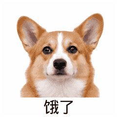
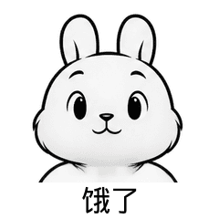
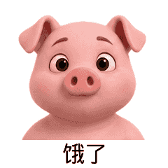
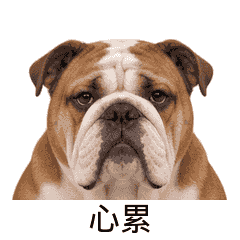
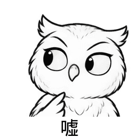
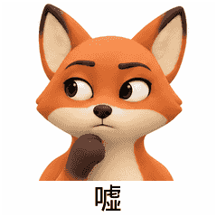

饿了 · corgi-hungry

机器通过 · 93975字节 · 形象与实际动态待审
v3已消除截耳，首尾主体顶界约y27→y19，仍有约8px差异；饿了可能读成期待/求关注，待动态复核。
试稿GIF12张GIF机器通过；10张待审候选，2张单独待返工。候选：饿了4张、心累3张、嘘3张；后两词尚不足4张。
未实际动态播放、未取得用户语义/审美认可。全部禁止发布，不入APK/API。“继续”不是逐张批准。
240×240、20帧、4000ms、loop0、低于250KB，峰值停顿900ms。机器合格不代表视觉无缺陷。

机器通过 · 93975字节 · 形象与实际动态待审
v3已消除截耳，首尾主体顶界约y27→y19，仍有约8px差异；饿了可能读成期待/求关注，待动态复核。
试稿GIF
机器通过 · 88887字节 · 形象与实际动态待审
舔嘴后抬眉，可能读成期待或卖萌；少量灰色阴影不完全是纯线条。
试稿GIF
机器通过 · 88750字节 · 形象与实际动态待审
舔唇及渴望眼神可见，可能偏可爱/期待；动物拟人嘴形与材质待审。
试稿GIF机器通过 · 81510字节 · 形象与实际动态待审
寻找、舔唇后抬眉，仍需去字幕判断是否饥饿；不是用户语义认可。
试稿GIF
机器通过 · 112588字节 · 形象与实际动态待审
闭眼叹气后沉重眼睑，可能读成困倦；毛发和头形变化待循环复核。
试稿GIF机器通过 · 90588字节 · 形象与实际动态待审
叹气及下垂嘴角可见，可能读成困倦/难过；材质与轮廓变化待审。
试稿GIF机器通过 · 79047字节 · 形象与实际动态待审
叹气和疲惫眼睑较清楚，可能读成困倦；待实际播放。
试稿GIF
机器通过 · 110737字节 · 形象与实际动态待审
同侧翼尖到喙前，可能读成思考；翼尖拟手指形态、底部羽毛与循环连续性待审。
试稿GIF
机器通过 · 88253字节 · 形象与实际动态待审
v2改为平滑黏土并抬高起始爪；峰值仍是拟人手指状爪，不符合普通无手指爪的原提示，语义/造型待审。
试稿GIF机器通过 · 81841字节 · 形象与实际动态待审
v2抬高起始手，完整食指及掌部可见；手势路径与侧眼可读，未动态播放。
试稿GIF待返工：v2行注册修订后顶界仍约y32→y20，约12px漂移，不能用机器通过关闭原问题。
最终源稿问题GIF证据（不是候选）待返工：v4解决触顶截耳，但恢复段仍整体上移，顶界约y42→y24，约18px。三次修订后本轮停止，不作为待审候选。
最终源稿问题GIF证据（不是候选）每组4行，按manifest顺序；每行帧0/5/10/13/19。第二组第2行海豹、第三组第1行橘猫均属待返工证据。
{kind=link}
{kind=link}
{kind=link}